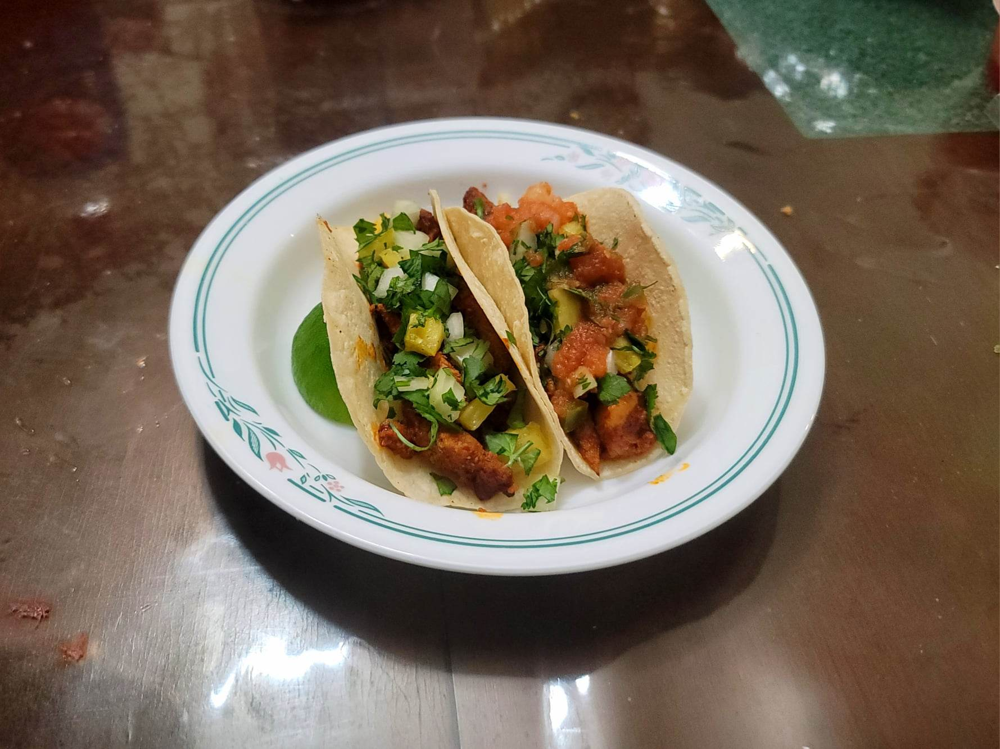

Al Pastor

Ingredients:
- 2 lb Pork butt, sliced into steaks
- Salt, to taste
- Black Pepper, to taste
- 1 oz Dried guajillo peppers, seeded, stem removed
- 1 oz Achiote paste
- 1/4 cup Pineapple juice
- 1/4 cup White vinegar
- 3 cloves Garlic
- 1 tsp Dried oregano
- 1/2 tsp Cumin
- 1/4 tsp Black pepper
- 2 whole Cloves
- 1 1/4 tsp Salt
- 1 Whole pineapple, peeled, cut into thirds
Instructions:
- Pound the pork steaks with a mallet to flatten. Season the pork on both sides with salt and pepper to taste.
- Add the guajillo peppers to a sauce pan with water to cover. Simmer over medium heat until softened. Let cool and drain.
- Add the peppers along with the rest of the ingredients except the pineapple to a blender. Blend until smooth. Place into a container with the pork and let marinate overnight.
- Prepare the pork onto a vertical rotisserie and place a third of the pineapple on top and on the bottom. Reserve the remaining third for topping. Cook on low for about 1 hour or until mostly cooked through. Then set to high and sear the outer edges. Make thin slices from the pork to use in your tacos or as you please. Then let the outer edges sear again before repeating.
- Serve the al pastor in tacos, tortas, or however you like. Top tacos with cilantro, diced onions, diced pineapple, and any salsa such as salsa roja.